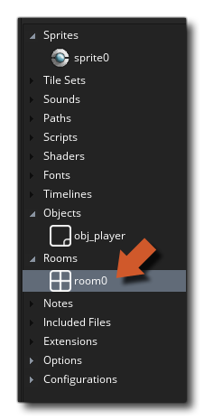
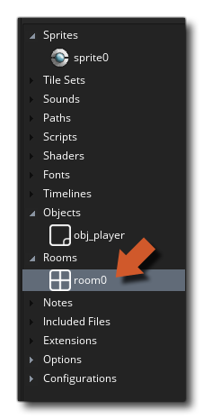
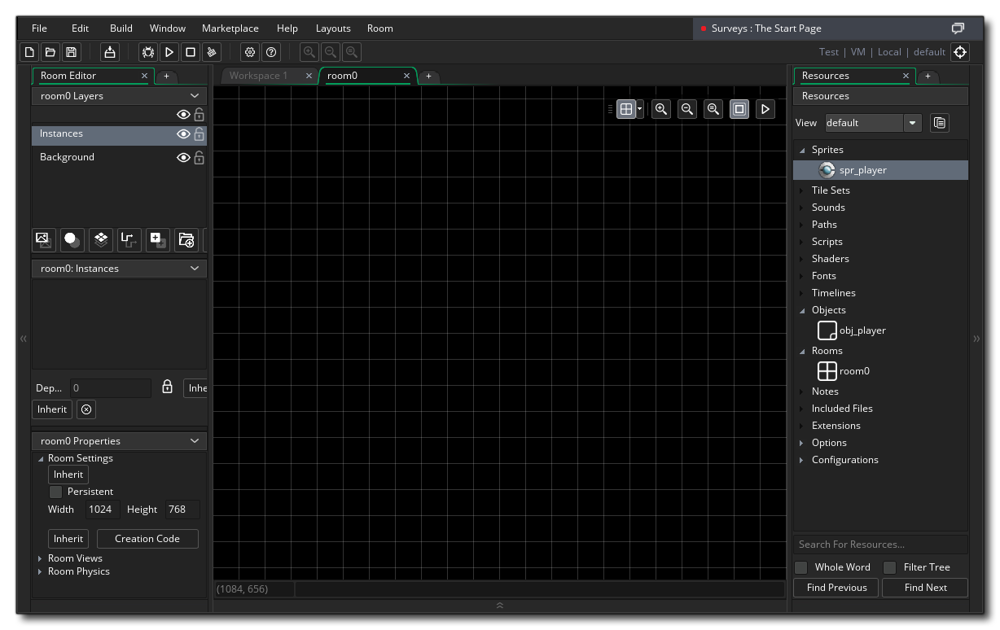
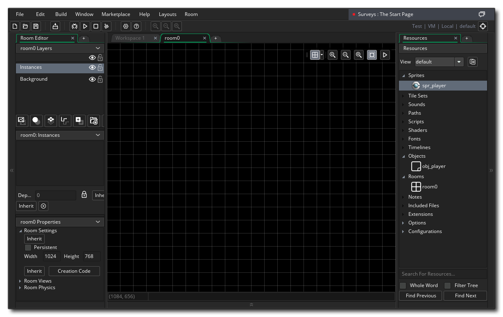
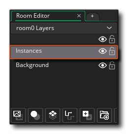
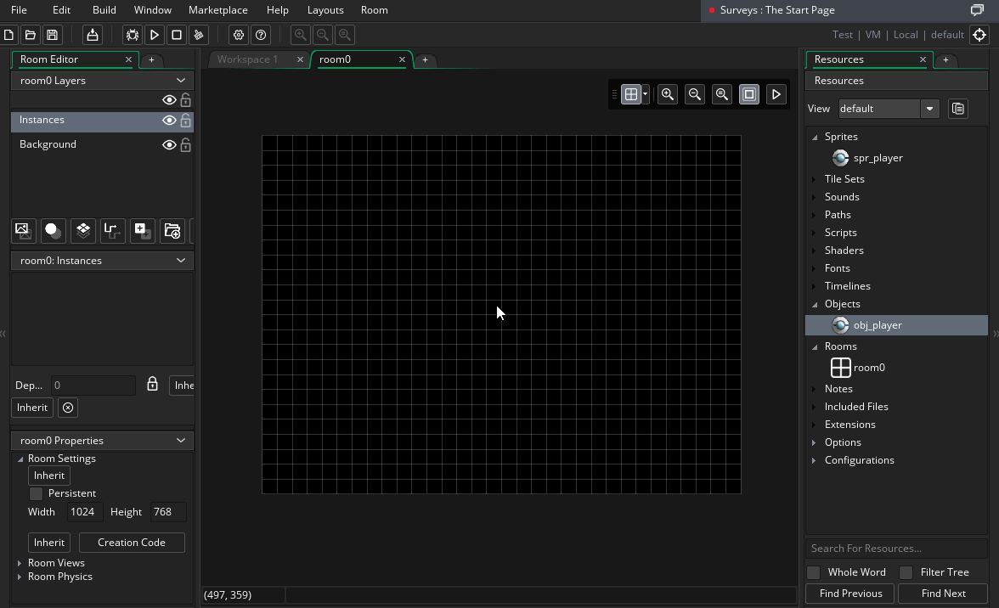
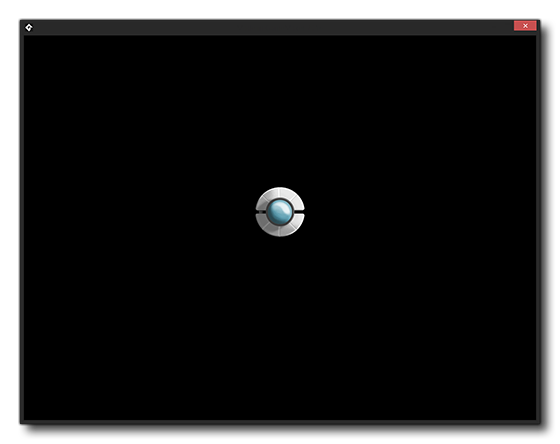
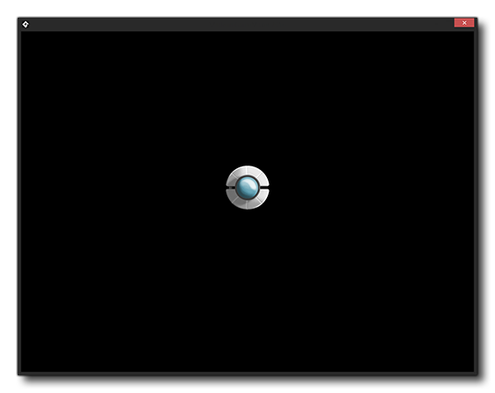

The only resource that is created for you by default when you create a new project is the Room Resource. This is because all games require at least one room to run, and so GameMaker Studio 2 makes this room for you. You can delete it, and you can edit it, and you can create further rooms using the right button  menu. In this case we will simply edit the default room "room0".

menu. In this case we will simply edit the default room "room0".

To open it for editing you need to double-click  on it, which will open the Room Editor in its own workspace:

on it, which will open the Room Editor in its own workspace:

Rooms can be used for just about anything. You can have a single room for every aspect of your game, like splash screen, main menu, introduction, level 1, 2, 3, etc... or you can have a single room and generate everything using code. Normally you'd have a mix of both things, with some rooms fulfilling multiple purposes (like one room for all your different menus) and other rooms for a single purpose, like an overworld room, or a level room.
With the Room Editor workspace open, you will see that most of the screen is taken up with a large black area with grid squares over it. This area is the actual room, which is currently a blank canvas on which you can place resources to create your game level.
Everything that goes into a room is placed on a layer (we'll discuss layers in more detail in further tutorials) so make sure the Instance Layer is selected in the layer properties window: 
Then you can simply drag an instance of the object "obj_player" into the room by clicking  on the object in the resource tree and dragging it into the room where you want it to appear:
on the object in the resource tree and dragging it into the room where you want it to appear:

We can actually run the "game" now as we have a room and an object so go ahead and click the Run Button  at the top left of the IDE. You'll see some text scroll up in the output window at the bottom of the window, and then the game will run:

at the top left of the IDE. You'll see some text scroll up in the output window at the bottom of the window, and then the game will run:

Exciting stuff! Well, not yet... but it will be when we make our player instance actually do something. Before continuing, we should give the room a name, as the default name isn't very descriptive so give a slow double click  on resource name and call the room "rm_game". Now let's add some code to the player object.
on resource name and call the room "rm_game". Now let's add some code to the player object.